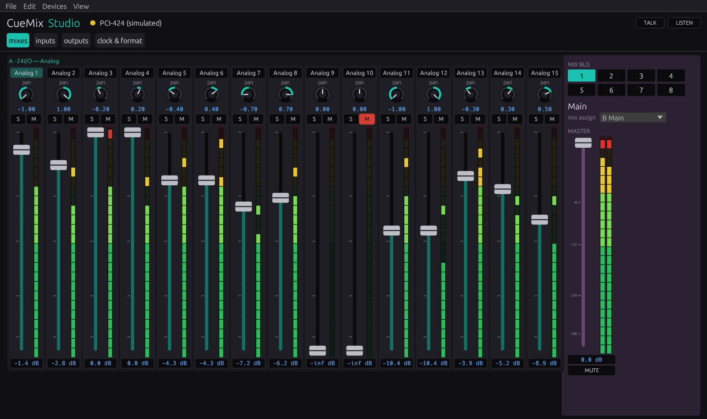
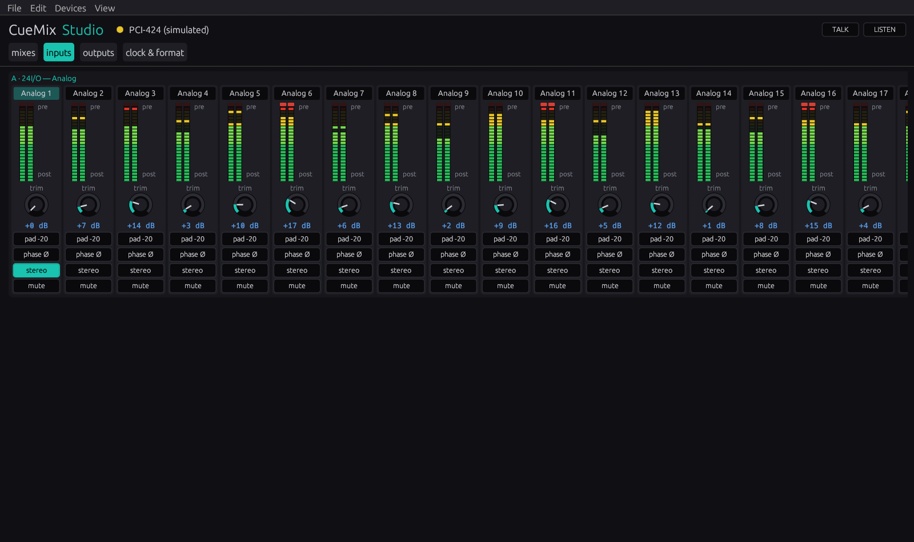
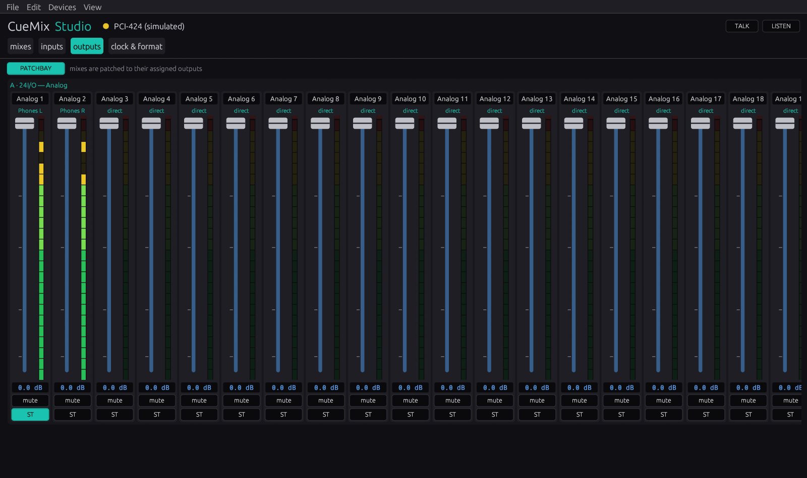
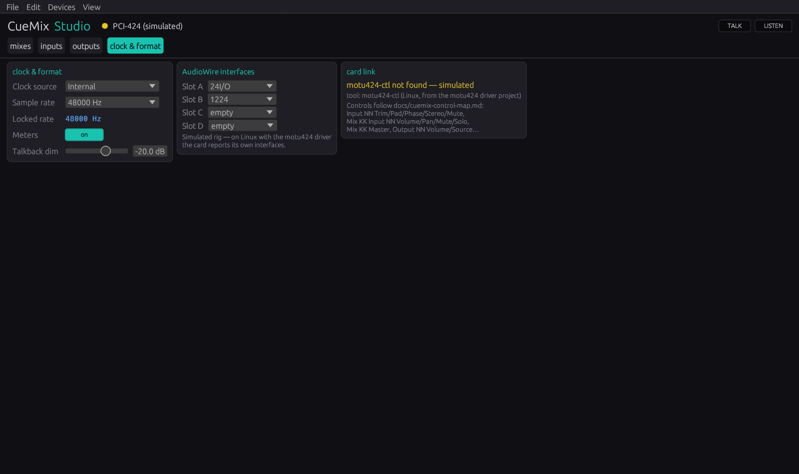
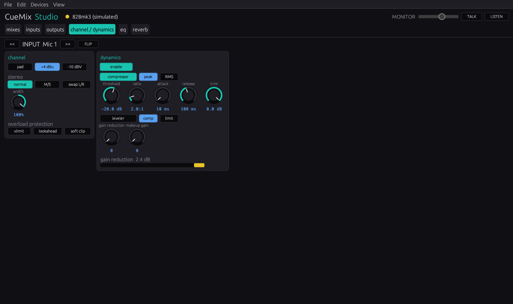
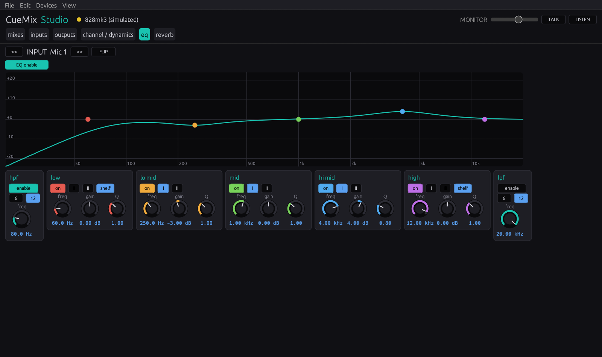
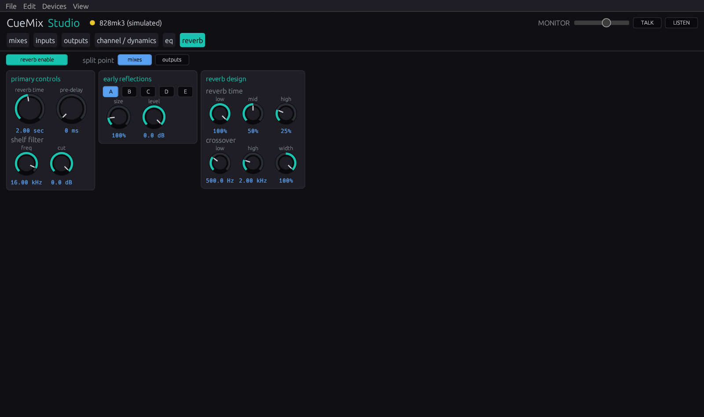

MOTU PCI‑324 / PCI‑424, réinventée pour Linux.
Un pilote noyau ALSA écrit de A à Z, des applications de contrôle façon CueMix et une rétro-ingénierie clean-room d’une carte son que le constructeur n’a jamais documentée.

curl -fsSL https://raw.githubusercontent.com/devfrp/Linux-motu-pci-424/main/get.sh | sh
Carte hôte AudioWire, pilote Linux hors-arbre. Code source
Une carte non documentée, portée sur Linux au grand jour
La PCI-324/424 est une carte hôte pour les interfaces MOTU AudioWire : les 2408, 24I/O, 828, HD192, 896HD et consorts. Faute de documentation du constructeur, la table des registres et le protocole de transport ont été reconstitués à partir du pilote Windows et du programme du DSP de la carte, puis vérifiés sur une vraie PCI-424 : la carte démarre désormais sous Linux. Toute l’infrastructure PCI, DMA, IRQ et ALSA est en place ; tout ce qui demeure incertain est confiné à deux fichiers, de sorte que les faits confirmés se concentrent en un seul endroit.
- Canal 1
- 24 bits / 3 octets
- Familles de fréquence
- 1× / 2× / 4×
- Interfaces
- 2408, 24I/O, 828, HD192, 896HD
- État
- démarre sous Linux
Ce qui est livré
Un pilote, trois applications de contrôle et un installeur qui fonctionne sur n’importe quelle distribution.
Module ALSA
NoyauDécoupage net en trois couches, entièrement géré par devm/pcim, empaqueté en DKMS pour se recompiler à chaque mise à jour du noyau.
Contrôle, CLImotu424-ctlLe CueMix FX version Linux, sur alsa-lib : source d’horloge, fréquence d’échantillonnage, gain/atténuation/phase par entrée et la matrice d’écoute entrées×bus.
Contrôle, GUImotu424-guiUne console de mixage GTK4 façon CueMix : tranches avec faders, vumètres à maintien de crête et panoramiques rotatifs, scènes, snapshots, annulation, visible sans carte avec --demo.
Contrôle, consolecuemix-studioUn seul binaire Rust pour Linux, macOS et Windows : pilote la carte via motu424-ctl sous Linux, simule un rig ailleurs, et ajoute les pages EQ, dynamique et réverb de la 828mk3.
Toute distribution
InstallationDétecte pacman/apt/dnf/zypper/apk/xbps, installe les dépendances puis le module via DKMS. Non interactif sous curl | sh.
RE clean-room
OutillageUn analyseur de références croisées capstone et un résolveur de vtables C++ ; chaque fait reconstitué est consigné avec sa preuve.
Faits seuls, GPL
LicenceSeuls les décalages, formats et séquences entrent dans les sources GPL-2.0. Les binaires du constructeur ne sont jamais redistribués.
La console, onglet par onglet
cuemix-studio avec son rig simulé, tel qu’il tourne sans carte.






Ce que la rétro-ingénierie a établi
Reconstitué à partir du pilote Windows du constructeur avec objdump, un analyseur de références croisées capstone et le décompileur rz-ghidra, à partir du programme C64x du DSP de la carte, et vérifié sur une vraie PCI-424.
| Découverte | Valeur | État |
|---|---|---|
| La carteun DSP TI TMS320C6412 en mode de boot PCI : fenêtre A = ses registres périphériques, fenêtre B = sa mémoire, BAR d’I/O = son port hôte | & 0xff800000 | Confirmé |
| Chemin d’interruptionle DSP lève INTREQ ; en attente = bit 1 de HSR, acquittement = INTRST dans RSTSRC | 0x10 → 0x01c00000 | Confirmé |
| TransportDMA piloté par le DSP depuis un anneau en mémoire hôte ; le DSP indique l’adresse bus qu’il a atteinte | anneau → +0x5c | Confirmé |
| DémarrageDSPINT lance le programme chargé, qui publie son bloc audio dans la boîte aux lettres (testé sur une vraie carte) | 0x3fffc → 0x6fac | Confirmé |
| Cartographie des canaux du boîtierle nombre de canaux est lu dans un descripteur fourni par l’interface connectée, pas dans une table statique | descripteur à l’exécution | Confirmé |
| Modèle d’objets du périphériquel’objet audio est un singleton global ; sous-objets : gestionnaire de fenêtres MMIO + tampon DMA partagé | A @ 0x61f50 | Confirmé |
| Firmware FPGApas de PROM : l’hôte envoie l’image bit à bit via le GPIO du DSP, puis charge le programme du DSP (testé sur une vraie carte) | request_firmware | Confirmé |
| Destination du mixeur CueMixcoefficients transférés par plage modifiée vers une base indiquée par la carte | [dev + 0x9c] | Confirmé |
| Paramètre de fréquence & sélection d’horlogeliés à l’interface et à la carte : ces dernières valeurs ne s’observent que sur du matériel | base + 0x64 | Sur carte |
Chemin du signal
Les couches PCI et PCM restent indépendantes du matériel ; chaque décalage de registre et chaque encodage résident uniquement dans le nœud du bas.
motu424_main.cAttache PCI, mappe les BAR, vecteur IRQ, création de la carte ALSA. L’interruption appelle motu424_hw_irq_ack().
motu424_pcm.cOpérations PCM d’ALSA : traduit open/prepare/trigger/pointer en appels motu424_hw_*.
motu424_hw.cRegistres, horloge/fréquence, anneau DMA, ack IRQ. La vérité matérielle réside ici.
Installation
La commande unique récupère les sources et lance l’installeur : dépendances, module DKMS, outils. Ajoute --gui pour le panneau graphique.
# dépendances + module DKMS + outils + chargement curl -fsSL https://raw.githubusercontent.com/devfrp/Linux-motu-pci-424/main/get.sh | sh # avec l’interface GTK curl -fsSL …/get.sh | sh -s -- --gui
git clone https://github.com/devfrp/Linux-motu-pci-424 cd motu-pci-424 ./install.sh # ou : make && make load motu424-ctl # état CueMix (CLI) motu424-gui # panneau graphique
Où en est le projet
La carte démarre sous Linux. Il reste à connaître le format de l’audio dans l’anneau hôte, puis la lecture, la capture et les changements de fréquence sur une vraie carte.
- Fait
Cadre & outillage
Ossature PCI/DMA/IRQ/ALSA, installeur multi-distribution, CLI + GUI, chaîne d’outils RE.
- Fait
Modèle registres, IRQ & transport
Fenêtres du DSP, ack IRQ, anneau en DMA bus-master, l’interface IOCTL complète.
- Fait
Chargement du firmware sur une vraie carte
Image FPGA et programme DSP chargés, bloc audio publié ; le pilote le fait désormais avec request_firmware().
- Fait
Modèle d’objets & initialisation
Toute la structure d’extension du périphérique, l’objet audio & ses sous-objets, et la séquence qui publie l’adresse de base audio.
- Partiel
Encodage horloge & fréquence
Familles de fréquence, activation et incrément obtenus ; la sélection d’horloge et le paramètre de fréquence sont liés à l’interface, leurs valeurs demandent une carte.
- Carte requise
Premier son & validation
Format des trames dans l’anneau, lecture/capture à chaque fréquence, le mixeur CueMix, tests d’endurance : le dernier pas avant le son.